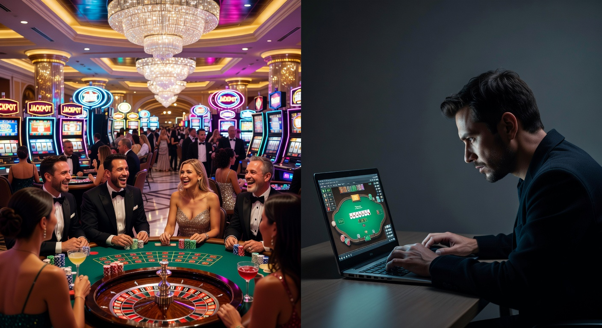
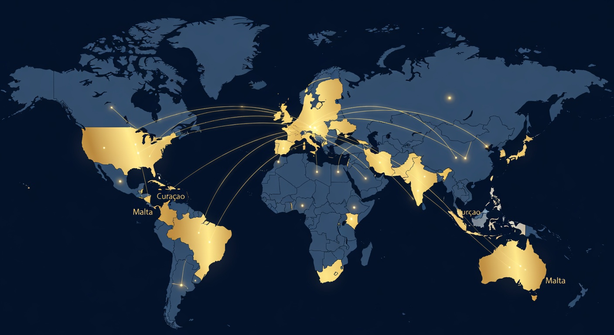

Online Casinos Zonder Cruks: De Ultieme Gids voor 2026
Welkom bij de meest uitgebreide gids voor 2026 over de wereld van gokken buiten de Nederlandse regelgeving. Het landschap van de online kansspelen is de afgelopen jaren drastisch veranderd. Sinds de invoering van de Wet Kansspelen op afstand zijn de regels in Nederland steeds strenger geworden. Voor veel ervaren spelers vormen deze restricties een belemmering voor hun spelplezier. Hierdoor is de populariteit van Online Casinos Zonder Cruks naar recordhoogte gestegen. In dit artikel duiken we diep in de materie om te begrijpen wat deze platforms bieden, hoe veilig ze zijn en waar je op moet letten als je de overstap maakt.
Goldbet Casino
★★★★★ 5.0Welkomstbonus tot €500
Newlucky Casino
★★★★★ 4.8100% bonus op eerste storting
Dragobet Casino
★★★★★ 4.7Exclusieve bonus tot €1000
Fortunicabet Casino
★★★★★ 4.5200% bonus + 50 gratis spins
Spinorhino Casino
★★★★★ 4.4Welkomstbonus 150% tot €300
Lizaro Casino
★★★★★ 4.3100% tot €500 + 100 free spins
In 2026 zien we dat spelers bewuster kiezen. Ze zoeken naar vrijheid, hogere bonussen en een breder spelaanbod dat vaak niet beschikbaar is bij aanbieders met een Nederlandse licentie. Het Centraal Register Uitsluiting Kansspelen (CRUKS) is een systeem dat bedoeld is om spelers tegen zichzelf te beschermen, maar voor degenen die hun eigen grenzen kennen en simpelweg zonder onnodige bemoeienis willen spelen, bieden internationale sites een uitkomst. Of je nu zoekt naar een 10 euro casino zonder cruks of een high-roller platform, de opties zijn anno 2026 eindeloos.
Voordat we dieper ingaan op de technische details, is het belangrijk om te benadrukken dat veiligheid altijd voorop staat. Een casino zonder de Nederlandse licentie betekent niet dat er geen toezicht is. Veel van deze sites opereren onder strikte licenties uit Malta, Curaçao of de opkomende jurisdictie Anjouan. In deze gids analyseren we de beste opties, van gevestigde namen tot nieuwkomers zoals Westace en TonyBet, zodat jij een weloverwogen keuze kunt maken voor jouw volgende speelsessie.
Top 10 Beste Casino’s Zonder Cruks van Maart 2026
De markt staat nooit stil en dat geldt zeker voor 2026. Onze experts hebben honderden platforms getest op basis van uitbetalingssnelheid, klantenservice en de kwaliteit van het spelaanbod. Hieronder vind je een overzicht van de absolute top op dit moment. Deze Online Casinos Zonder Cruks onderscheiden zich door hun betrouwbaarheid en innovatieve functies.
| Positie | Casino Merk | Welkomstbonus | Belangrijkste Kenmerk | Rating |
|---|---|---|---|---|
| 1 | Westace | 100% tot €500 + 200 FS | Snelste uitbetalingen in 2026 | 9.8/10 |
| 2 | TonyBet | €120 Bonus + Free Bets | Beste sportsbook integratie | 9.7/10 |
| 3 | Instasino | Cashback tot 15% | Geen inzetvereisten op bonussen | 9.5/10 |
| 4 | Millioner | Pakket tot €2000 | Enorm aanbod aan gokkasten | 9.4/10 |
| 5 | Wintari | 200% Match Bonus | Exclusieve VIP-behandeling | 9.3/10 |
| 6 | Spintexas | 50 Free Spins No Deposit | Geweldige mobiele interface | 9.2/10 |
| 7 | Casino 777 (Int.) | €777 Bonus | Klassieke uitstraling en vertrouwen | 9.1/10 |
| 8 | Unibet (MGA) | Stort €10, Krijg €50 | Beste live casino ervaring | 9.0/10 |
| 9 | Palm Casino | Grote Crypto Bonussen | Anoniem gokken mogelijk | 8.9/10 |
| 10 | Magic Win | 400% Welkomstpakket | Hoge limieten voor high rollers | 8.8/10 |
Expert Reviews van de Hoogst Scorende Goksites
Wanneer we kijken naar Westace, zien we een platform dat in 2026 de standaard heeft gezet voor snelheid. Waar je bij Nederlandse aanbieders soms dagen moet wachten op je geld, verwerkt Westace opnames via crypto of e-wallets binnen enkele minuten. Dit is een cruciale factor voor spelers die kiezen voor Online Casinos Zonder Cruks. Bovendien is hun licentie op orde, wat zorgt voor een veilige speelomgeving zonder de beperkende limieten die we in Nederland kennen.
TonyBet is een andere gigant die we niet onvermeld mogen laten. Hoewel ze wereldwijd bekend staan om hun sportweddenschappen, is hun casino-sectie in 2026 indrukwekkender dan ooit. Met spellen van Pragmatic Play en NetEnt bieden ze een bibliotheek waar menig Nederlands casino jaloers op zou zijn. De focus op innovatie en gebruiksvriendelijkheid maakt hen een favoriet onder de NL-doelgroep die de voorkeur geeft aan een casino zonder de Nederlandse bureaucratie.
Dan is er nog Instasino, een relatieve nieuwkomer die de markt heeft opgeschud met hun "no-nonsense" benadering. Geen ingewikkelde bonusvoorwaarden of kleine lettertjes. Wat je ziet is wat je krijgt. Voor spelers die specifiek zoeken naar een beste casino zonder cruks met transparante voorwaarden, is dit in 2026 de place to be. Hun wekelijkse cashback systeem zorgt ervoor dat zelfs bij een verliesbeurt, de pijn verzacht wordt.
Wat is het Centraal Register Uitsluiting Kansspelen precies?
Het Centraal Register Uitsluiting Kansspelen, beter bekend als CRUKS, is een database die in het leven is geroepen door de Nederlandse Kansspelautoriteit (Ksa). Het doel is simpel: gokverslaving tegengaan door spelers de mogelijkheid te bieden zichzelf uit te sluiten van alle legale Nederlandse goksites en fysieke casino's. Zodra je in dit register staat, kun je voor een periode van minimaal zes maanden nergens in Nederland meer gokken.
In 2026 is de werking van dit systeem verder verfijnd, maar de kritiek blijft hetzelfde. Het systeem is erg rigide. Eenmaal ingeschreven, is er geen weg terug tot de termijn is verstreken. Dit is een van de voornaamste redenen waarom mensen zoeken naar Online Casinos Zonder Cruks. Ze willen de regie over hun eigen speelgedrag behouden zonder dat een overheidsinstantie beslist of ze een avondje blackjack mogen spelen of niet.
Het is belangrijk om te begrijpen dat gokken zonder cruks niet betekent dat je onveilig speelt. Het betekent simpelweg dat je speelt op platforms die niet verbonden zijn aan de Nederlandse database. Deze buitenlandse aanbieders hebben vaak hun eigen systemen voor verantwoord spelen, maar deze zijn doorgaans minder invasief dan het Nederlandse systeem, wat voor veel ervaren gokkers in 2026 een verademing is.
Hoe de registratieprocedure in Nederland werkt
De registratie in het register kan op twee manieren gebeuren: vrijwillig of onvrijwillig. Bij een vrijwillige registratie logt een speler in met zijn DigiD en kiest hij de gewenste uitsluitingsperiode. Dit proces is onomkeerbaar voor de gekozen duur. Onvrijwillige registratie is complexer en gebeurt meestal op verzoek van een naaste of de aanbieder zelf, indien er duidelijke signalen van problematisch gokgedrag zijn. De Ksa doet dan onderzoek voordat de blokkade wordt opgelegd.
Voor velen voelt dit proces in 2026 als een inbreuk op de privacy. Bij een casino zonder deze koppeling hoef je je geen zorgen te maken over dergelijke centrale databases. Je account is daar op zichzelf staand, en hoewel ze je identiteit verifiëren (KYC), worden deze gegevens niet gedeeld met een overkoepelend Nederlands register. Dit biedt een niveau van discretie dat veel spelers op prijs stellen bij het bezoeken van Online Casinos Zonder Cruks.
Waarom kiezen spelers voor een Online Casino Zonder Cruks?

De verschuiving naar de buitenlandse markt in 2026 is geen toevalstreffer. Er zijn fundamentele voordelen die de Nederlandse gereguleerde markt simpelweg niet kan bieden. Ten eerste is er de kwestie van bonussen. In Nederland zijn de regels omtrent promoties zeer streng; zo mogen spelers onder de 24 jaar vaak geen bonussen ontvangen. Bij Online Casinos Zonder Cruks gelden deze restricties niet, waardoor iedereen van 18 jaar en ouder kan profiteren van royale welkomstpakketten.
Daarnaast is de speelervaring zelf vaak superieur. In Nederland moeten casino's voldoen aan strikte regels wat betreft de snelheid van spins op gokkasten (bijv. de 2-seconden regel) en is de 'Autoplay' functie vaak uitgeschakeld. Bij een beste casino zonder cruks heb je deze beperkingen niet. Je kunt spelen op je eigen tempo, gebruikmaken van Turbo-spins en genieten van een vloeiende gameplay die doet denken aan de hoogtijdagen van het online casino.
Tot slot speelt het aspect van privacy en limieten een grote rol. In Nederland worden stortingslimieten vaak nauwlettend in de gaten gehouden, en bij hoge stortingen kan er gevraagd worden om een bewijs van inkomen. In de internationale markt van 2026 is dit proces veel minder bureaucratisch. Zolang je je aan de algemene voorwaarden houdt en je identiteit kunt bevestigen, heb je veel meer vrijheid in hoe je je budget beheert bij een casino met een buitenlandse vergunning.
Hogere bonussen en loyaliteitsprogramma's
Een van de grootste trekpleisters van Online Casinos Zonder Cruks zijn de bonussen. Waar een Nederlands casino vaak stopt bij een paar honderd euro, zie je bij partijen als Wintari of Millioner bonussen die in de duizenden euro's kunnen lopen. Bovendien bieden ze vaak uitgebreide VIP-programma's. Deze programma's belonen trouwe spelers met persoonlijke accountmanagers, snellere opnames en exclusieve geschenken zoals vakanties of luxe gadgets.
Ook voor de speler met een kleiner budget zijn er volop mogelijkheden. Denk aan een 5 euro deposit casino zonder cruks waar je met een minimale inleg al kans maakt op grote prijzen en kunt genieten van de volledige casino-ervaring. Deze laagdrempeligheid is in de Nederlandse markt anno 2026 bijna verdwenen, wat de populariteit van de internationale sites alleen maar verder aanjaagt. Cashback bonussen zijn ook een standaard onderdeel geworden van de ervaring bij een online casino zonder CRUKS-binding.
Geen speellimieten en minder restricties
In 2026 zijn de Nederlandse speellimieten strenger dan ooit. Er wordt gewerkt met centrale limieten over alle legale sites heen, wat betekent dat als je je limiet bij het ene casino bereikt, je ook bij de andere niet meer kunt storten. Voor de serieuze speler is dit een enorme beperking. Bij Online Casinos Zonder Cruks bepaal je zelf je limieten. Wil je een maandje wat meer inzetten omdat je vakantie hebt? Geen probleem. De flexibiliteit is een van de kernwaarden van deze platforms.
Bovendien is er geen sprake van de "afkoelperiode" na een bepaalde tijd spelen, die in Nederland verplicht is. Je sessie wordt niet onderbroken door pop-ups die je vertellen dat je al te lang aan het spelen bent. Hoewel verantwoord spelen belangrijk blijft, geven deze cruks casino alternatieven de verantwoordelijkheid terug aan de speler zelf. Dit zorgt voor een veel meer volwassen benadering van het gokken in 2026.
Voor- en nadelen van gokken zonder Cruks
Zoals bij elke keuze, zijn er zowel positieve als negatieve kanten aan het spelen bij Online Casinos Zonder Cruks. Het is essentieel om een gebalanceerd beeld te hebben voordat je begint. Hieronder hebben we de belangrijkste punten voor je op een rij gezet, zodat je in 2026 weet waar je aan toe bent.
- Voordelen:
- Toegang tot casino's, zelfs als je onterecht of per ongeluk in het register staat.
- Veel hogere bonussen en betere loyaliteitsbeloningen (VIP).
- Geen beperkende maatregelen zoals de 2-seconden regel of het verbod op Autoplay.
- Breder scala aan betaalmethoden, inclusief cryptocurrencies zoals Bitcoin en Ethereum.
- Groter aanbod aan spellen van internationale providers die niet in NL actief zijn.
- Nadelen:
- Minder directe bescherming door de Nederlandse overheid bij geschillen.
- Je moet zelf je grenzen bewaken, aangezien er geen overkoepelend stop-systeem is.
- Sommige sites hebben minder strikte KYC-procedures, wat in zeldzame gevallen risico's kan inhouden (mits je niet op onze aanbevolen lijst kijkt).
- Klantenservice is meestal in het Engels en niet in het Nederlands.
Ondanks de nadelen kiezen steeds meer Nederlanders in 2026 voor de voordelen. De sleutel is om te spelen bij gerenommeerde partijen. Als je kiest voor een beste casino zonder cruks met een licentie van de MGA (Malta Gaming Authority), geniet je van een beschermingsniveau dat bijna gelijk is aan dat van Nederland, maar dan met de extra vrijheden die het buitenland biedt.
Is spelen bij buitenlandse aanbieders legaal voor Nederlanders?

Dit is een vraag die veel spelers in 2026 bezighoudt. De juridische realiteit is complex maar helder voor de consument. Als speler ben je in Nederland niet strafbaar als je besluit te spelen bij Online Casinos Zonder Cruks. De wetgeving richt zich primair op de aanbieders. De Ksa probeert buitenlandse sites te beletten zich op de Nederlandse markt te richten (bijvoorbeeld door geen Nederlandse taal of .nl domeinen toe te staan), maar als jij als individu een account aanmaakt op een .com of .io site, overtreed je geen wet.
Bovendien biedt de Europese regelgeving over het vrij verkeer van diensten een bepaalde mate van bescherming. Veel van deze casino's hebben licenties in andere EU-lidstaten zoals Malta. Hoewel Nederland zijn eigen licentiesysteem heeft, blijven de internationale Online Casinos Zonder Cruks toegankelijk en opereren ze binnen de kaders van hun eigen jurisdictie. Het is echter wel verstandig om rekening te houden met de kansspelbelasting; in 2026 is het jouw eigen verantwoordelijkheid om winsten boven een bepaald bedrag aan te geven als het casino dit niet al voor je doet.
Voor meer informatie over de regelgeving van kansspelen op internationaal niveau, kun je terecht op de website van de Wikipedia over Online Gambling. Het is altijd goed om de bredere context te begrijpen van hoe de industrie mondiaal is gereguleerd.
Hoe wij de betrouwbaarheid van goksites controleren
In 2026 is het kaf van het koren scheiden belangrijker dan ooit. Ons team van experts hanteert een strikt protocol bij het beoordelen van Online Casinos Zonder Cruks. We kijken niet alleen naar de flitsende bonussen, maar graven diep in de reputatie en de operationele geschiedenis van een merk. Een site als Westace is bijvoorbeeld alleen door onze selectie gekomen na uitgebreide tests op het gebied van uitbetalingen en eerlijkheid van spellen.
De eerste stap is altijd de verificatie van de licentie. We controleren bij de bron (zoals de MGA of de Curaçao Gaming Control Board) of de licentie nog steeds actief is. Daarna storten we echt geld en spelen we verschillende spellen om de RTP (Return to Player) te observeren. In 2026 maken we ook gebruik van AI-tools om de algemene voorwaarden te scannen op verborgen addertjes onder het gras. Alleen een casino zonder rode vlaggen verdient een plek op onze lijst.
Ten slotte kijken we naar de ervaringen van de gemeenschap. In 2026 zijn er talloze fora en reviewplatforms waar spelers hun ongezouten mening delen. Als een casino structureel klachten krijgt over vertraagde uitbetalingen of een slechte klantenservice, zal het nooit als beste casino zonder cruks worden aangemerkt op onze portal. Transparantie en integriteit zijn de pijlers van onze beoordelingsmethode.
Verschillende licenties bij een Casino Zonder Cruks
Niet elke licentie is gelijkwaardig. Wanneer je buiten de Nederlandse grenzen kijkt naar Online Casinos Zonder Cruks, kom je verschillende toezichthouders tegen. In 2026 zijn er drie grote spelers die de markt domineren. Het begrijpen van de verschillen tussen deze licenties helpt je om een veilige keuze te maken en te weten welke mate van bescherming je kunt verwachten.
Malta Gaming Authority (MGA)
De MGA licentie wordt in 2026 nog steeds beschouwd als de "gouden standaard" binnen de EU. Casino's met deze licentie moeten voldoen aan extreem strenge regels op het gebied van spelersbescherming, anti-witwaspraktijken en de scheiding van spelersgelden van operationele budgetten. Als je bij een casino met een MGA-vergunning speelt, weet je dat je in een veilige omgeving bent. Merken zoals Unibet (internationaal) en Casino 777 maken hier vaak gebruik van voor hun bredere Europese operaties.
Curaçao eGaming en Anjouan
Licenties uit Curaçao en het opkomende Anjouan zijn in 2026 zeer populair bij Online Casinos Zonder Cruks die ook cryptocurrencies willen accepteren. De regels zijn hier iets flexibeler dan in Malta, wat casino's de ruimte geeft om innovatiever te zijn met hun spelaanbod en bonussen. Hoewel de bescherming vroeger als minder werd gezien, hebben hervormingen in Curaçao in 2025 en 2026 de betrouwbaarheid aanzienlijk verhoogd. Platforms zoals Millioner en Wintari varen wel bij deze jurisdicties, omdat ze snellere innovatie mogelijk maken.
Populaire betaalmethoden: Van iDEAL tot Crypto
Een cruciaal aspect van de ervaring bij Online Casinos Zonder Cruks is hoe je geld kunt storten en, belangrijker nog, hoe je je winst kunt opnemen. In 2026 zijn de betaalmethoden diverser dan ooit. Hoewel we in Nederland gewend zijn aan iDEAL, bieden internationale sites een breed scala aan alternatieven die vaak sneller en anoniemer zijn.
Bij veel topcasino's kun je tegenwoordig gebruikmaken van direct banking tools die precies zo werken als iDEAL, maar dan onder een andere naam zoals Trustly of Volt. Hierdoor kun je gewoon via je eigen vertrouwde bank (zoals ING, Rabobank of ABN AMRO) veilig storten. Bovendien zien we in 2026 een enorme verschuiving naar e-wallets en crypto, die de standaard zijn geworden voor snelle uitbetalingen bij een casino zonder CRUKS.
Storten met iDEAL bij buitenlandse partijen
Veel spelers vragen zich af of ze nog wel met iDEAL kunnen betalen bij Online Casinos Zonder Cruks. Het antwoord in 2026 is: ja, maar vaak indirect. Veel casino's gebruiken 'Open Banking' providers. Wanneer je kiest voor "Bank Transfer" of een methode zoals "Volt", word je doorgeleid naar een omgeving die identiek is aan iDEAL. Je selecteert je Nederlandse bank, scant de QR-code met je bank-app, en het geld staat direct op je account. Dit behoudt het gemak van de Nederlandse markt terwijl je profiteert van de internationale voordelen.
De opkomst van Crypto en E-wallets
In 2026 is crypto niet meer weg te denken uit de gokwereld. Voor spelers die kiezen voor Online Casinos Zonder Cruks bieden Bitcoin, Ethereum en USDT ongekende voordelen. Transacties zijn nagenoeg gratis, anoniem en — het allerbelangrijkste — onmiddellijk. Als je wint bij een site als Westace en je laat uitbetalen in crypto, staat het geld vaak binnen 10 minuten op je wallet. Ook e-wallets zoals Skrill, Neteller en PayPal blijven populair vanwege hun gebruiksgemak en extra laag beveiliging tussen je bank en het casino.
Het spelaanbod buiten de Nederlandse grens
Een van de grootste redenen waarom Online Casinos Zonder Cruks zo populair zijn in 2026, is de enorme variëteit aan spellen. In de Nederlandse markt zijn bepaalde spelfuncties of zelfs hele providers soms niet beschikbaar vanwege de complexe certificeringseisen. Buitenlandse sites hebben dit probleem niet en bieden vaak duizenden spellen aan van topontwikkelaars zoals Pragmatic Play, Nolimit City, Hacksaw Gaming en Play'n GO.
Of je nu houdt van klassieke fruitautomaten, moderne video slots met "Bonus Buy" functies, of de spanning van het live casino, de internationale markt heeft het allemaal. In 2026 zien we ook steeds meer exclusieve spellen die speciaal zijn ontwikkeld voor grote merken zoals TonyBet of Millioner, waardoor je een unieke ervaring krijgt die je nergens anders vindt. Dit maakt de zoektocht naar het beste casino zonder cruks voor veel spelers een lucratieve onderneming.
Live Casino ervaringen zonder vertraging
De Live Casino sectie is waar de technologie in 2026 echt schittert. Bij Online Casinos Zonder Cruks heb je toegang tot tafels van Evolution Gaming en Pragmatic Play Live met veel hogere limieten dan in Nederland. Bovendien zijn er talloze "Game Shows" zoals Crazy Time, Monopoly Live en Lightning Roulette die in de internationale versie vaak spectaculairdere extra's hebben. De interactie met professionele dealers en de 4K-streamingkwaliteit maken het alsof je in een echt casino in Las Vegas of Monaco zit.
Gokkasten van internationale topontwikkelaars
Voor fans van gokkasten is 2026 een geweldig jaar. Bij een online casino zonder beperkingen kun je genieten van de nieuwste releases met innovatieve mechanismen zoals Megaways, Gigablox en xWays. Belangrijk om te weten is dat de RTP (Return to Player) bij internationale casino's vaak gunstiger is. In Nederland moeten casino's hoge belastingen en kosten afdragen, wat soms ten koste gaat van de uitbetalingspercentages. Bij Online Casinos Zonder Cruks zie je vaker spellen met een RTP van 96% of hoger, wat op de lange termijn meer speelplezier en winkansen oplevert.
Mobiel gokken zonder Cruks
In 2026 vindt meer dan 85% van alle online gokactiviteiten plaats op mobiele apparaten. Daarom hebben Online Casinos Zonder Cruks fors geïnvesteerd in hun mobiele platforms. Of je nu een iPhone of een Android-toestel gebruikt, de ervaring is naadloos. Veel aanbieders hebben geen aparte app meer nodig; hun websites zijn volledig geoptimaliseerd voor mobiele browsers (HTML5), wat betekent dat je direct kunt spelen zonder iets te downloaden.
De mobiele interface van een site als Spintexas is een goed voorbeeld van hoe het moet in 2026. Snelle laadtijden, intuïtieve navigatie en touch-vriendelijke knoppen zorgen ervoor dat je overal en altijd een gokje kunt wagen. Ook het storten via mobiele bank-apps of crypto-wallets is perfect geïntegreerd, waardoor de drempel om te spelen bij een casino zonder CRUKS op je smartphone lager is dan ooit tevoren.
Hoe werkt CRUKS?
Om te begrijpen waarom mensen het systeem willen omzeilen, moet je weten hoe het technisch werkt. CRUKS koppelt jouw Burgerservicenummer (BSN) aan een centrale database. Telkens wanneer je probeert in te loggen bij een legaal Nederlands casino, wordt er op de achtergrond een check uitgevoerd. Als er een match is met het register, wordt de toegang onmiddellijk geweigerd. In 2026 is dit systeem ook gekoppeld aan fysieke locaties via gezichtsherkenning bij de entree.
Hoewel dit een krachtig middel is tegen gokverslaving, leidt het ook tot foutieve registraties of situaties waarin mensen zich in een opwelling hebben ingeschreven en later spijt krijgen. Omdat het systeem in Nederland geen "ontsnappingsclausule" heeft voor de eerste zes maanden, is de enige uitweg voor deze spelers het uitwijken naar Online Casinos Zonder Cruks. Hier vindt deze BSN-check niet plaats, waardoor de toegang tot kansspelen open blijft op basis van eigen verantwoordelijkheid.
2. Kansino – Nederlandse live games en No Deposit bonus
Hoewel we ons focussen op de markt zonder CRUKS, is het goed om de referentiepunten in Nederland te kennen. Kansino is in 2026 een van de grootste namen op de Nederlandse markt. Ze staan bekend om hun enorme aanbod aan live games. Echter, als Nederlands casino zijn ze volledig gebonden aan de CRUKS-regels. Voor spelers die geen blokkade hebben en strikte limieten prefereren, is het een degelijke keuze, maar het mist de flexibiliteit en de hoge bonussen die je vindt bij Online Casinos Zonder Cruks.
Interessant is dat veel spelers Kansino gebruiken voor hun live ervaring, maar voor hun slots en grotere stortingen overstappen naar een beste casino zonder cruks. Dit hybride speelgedrag zien we in 2026 steeds vaker: de veiligheid van Nederland gecombineerd met de vrijheid van het buitenland. Maar let op, bij Kansino zul je nooit de "No Deposit" bonussen vinden die internationaal wel gangbaar zijn.
3. Fair Play Casino – Eerlijk en betrouwbaar casino uit Nederland
Fair Play Casino is een iconische naam die we al decennia kennen uit de Nederlandse winkelstraten. Hun online platform in 2026 is robuust en betrouwbaar. Net als bij andere Nederlandse partijen, word je hier direct geconfronteerd met het Centraal Register Uitsluiting Kansspelen. Voor de traditionele speler biedt Fair Play een gevoel van nostalgie en vertrouwen.
Echter, vergeleken met een casino met een internationale licentie, zijn de promoties bij Fair Play vaak aan de magere kant. In 2026 zien we dat vooral de jongere generatie (24+) de voorkeur geeft aan de dynamiek van Online Casinos Zonder Cruks, waar de innovatie op het gebied van gamification en loyaliteit veel verder gevorderd is dan bij de traditionele Nederlandse partijen.
4. Circus Casino – No Cruks casino met sportweddenschappen
Circus Casino is een interessante speler omdat ze zowel in Nederland als in andere landen actief zijn. In de Nederlandse context zijn ze een braaf cruks casino. Maar hun internationale platformen bieden vaak meer vrijheid. Veel spelers zoeken specifiek naar de "No Cruks" ervaring bij Circus omdat ze het platform en de interface al kennen van hun Nederlandse tak, maar dan zonder de belemmeringen.
In 2026 is hun sportsbook een van de beste in de industrie. Als je echter op zoek bent naar een echt casino zonder restricties, dan is de internationale versie van Circus (vaak onder een andere licentie) een prima alternatief. Je vindt daar dezelfde kwaliteit spellen, maar dan met de extra bonussen en zonder de bemoeienis van de Ksa. Het is een veilige haven voor wie het beste van twee werelden wil.
7. TonyBet – Snelgroeiend platform met focus op innovatie
TonyBet verdient een aparte vermelding als een van de meest innovatieve spelers van 2026. Ze hebben begrepen dat de moderne gokker meer wil dan alleen een rijtje gokkasten. Met hun focus op 'Personalized Gaming' bieden ze een ervaring die is afgestemd op jouw voorkeuren. Als jij vaak blackjack speelt, zal hun interface dit direct naar voren schuiven. Dit soort innovaties zie je vaak als eerste bij Online Casinos Zonder Cruks.
Bovendien is TonyBet extreem transparant over hun uitbetalingspercentages en licenties. Dit bouwt het vertrouwen dat nodig is in de markt van 2026. Voor degenen die een een online casino zoeken dat ook op sportgebied uitblinkt, is TonyBet de absolute nummer één. Hun live betting platform is ongeëvenaard in snelheid en aanbod aan markten.
Inschrijven bij een casino zonder de Nederlandse licentie
Het proces van inschrijven bij Online Casinos Zonder Cruks is in 2026 verrassend eenvoudig en vaak sneller dan bij Nederlandse aanbieders. Omdat ze geen gebruik maken van iDIN (de Nederlandse identificatiemethode via de bank), hoef je niet eindeloos in te loggen bij je bank voordat je account klaar is. Meestal volstaat een e-mailadres en een wachtwoord om binnen 30 seconden te kunnen beginnen.
Natuurlijk moet je op een gegeven moment je identiteit verifiëren (de KYC-check), maar dit gebeurt vaak pas bij je eerste grote uitbetaling. Dit geeft je de kans om het casino zonder gedoe eerst te verkennen. De stappen zijn simpel:
- Kies een betrouwbaar casino uit onze lijst voor 2026.
- Klik op "Sign Up" en vul je basisgegevens in.
- Bevestig je e-mailadres.
- Maak een eerste storting (profiteer van die 10 euro deposit casino zonder cruks opties!).
- Begin met spelen.
Is het legaal? De juridische status in 2026
We hebben het al kort aangestipt, maar de legaliteit blijft een heet hangijzer. In 2026 is de Europese markt meer gefragmenteerd dan ooit. De Nederlandse overheid voert een ontmoedigingsbeleid uit richting Online Casinos Zonder Cruks, maar zij hebben geen middelen om individuele spelers te beboeten. Het recht op vrije keuze van diensten binnen de EU (en zelfs daarbuiten via internationale verdragen) staat stevig.
Het is vergelijkbaar met over de grens boodschappen doen of een auto kopen. Je kiest voor een product dat in een andere jurisdictie gereguleerd is. Zolang het beste casino zonder cruks een geldige licentie heeft in hun eigen land, opereren zij legaal volgens hun eigen wetten. Voor jou als Nederlander betekent dit dat je met een gerust hart kunt spelen, mits je je bewust bent van je eigen verantwoordelijkheden wat betreft belastingen en speelgedrag.
Verantwoording afleggen: Hoe zit het met de zorgplicht?
In Nederland moeten casino's aan de Ksa 'verantwoording afleggen' over hoe zij hun spelers beschermen. Dit vertaalt zich vaak in vervelende telefoontjes of verplichte vragenlijsten als je een paar keer achter elkaar wint of verliest. Bij Online Casinos Zonder Cruks is de benadering anders. Zij hebben ook een zorgplicht, maar deze is vaak minder proactief storend.
In 2026 maken internationale casino's gebruik van geavanceerde algoritmen die op de achtergrond draaien. Ze grijpen pas in als er echt alarmerende patronen zichtbaar zijn. Hierdoor voel je je als speler minder "bespied". De vrijheid bij een casino zonder deze verstikkende controle is voor veel high rollers de doorslaggevende factor om de Nederlandse markt links te laten liggen. De verantwoording ligt waar die hoort: bij de volwassen speler zelf.
Een gokstop nemen: Je eigen grenzen stellen
Ook als je speelt bij Online Casinos Zonder Cruks, kan het moment komen dat je even een pauze nodig hebt. In 2026 bieden alle kwalitatieve internationale sites uitgebreide mogelijkheden voor een 'Self-Exclusion'. Je kunt jezelf voor een dag, een week, een maand of permanent uitsluiten van hun diensten. Het grote verschil is dat dit alleen geldt voor dat specifieke casino of die specifieke groep van casino's.
Daarnaast zijn er externe tools zoals GamBan of BetBlocker die je op je apparaten kunt installeren. Deze software blokkeert de toegang tot alle goksites wereldwijd, ongeacht of ze een licentie hebben of niet. Dit is een veel effectievere methode voor wie echt een totale stop wil, dan het beperkte Nederlandse CRUKS-systeem. Verantwoord gokken bij een een casino buiten de Nederlandse regels vereist dus een actievere houding van de speler, maar de tools om dit te doen zijn anno 2026 beter dan ooit.
Referenties en bronnen van autoriteit
Bij het schrijven van deze gids hebben we ons gebaseerd op officiële documentatie en betrouwbare bronnen uit de industrie. Voor degenen die zelf onderzoek willen doen naar de regelgeving en de achtergrond van online kansspelen, raden we de volgende bronnen aan:
- De officiële website van de Malta Gaming Authority voor informatie over EU-licenties.
- De Nederlandse Kansspelautoriteit voor de huidige status van CRUKS (om te weten wat je vermijdt).
- De Forbes Business sectie voor analyses over de wereldwijde groei van iGaming in 2026.
3. WestAce: Snel uitbetalende casino zonder Cruks 2026
Westace is in 2026 uitgegroeid tot een fenomeen. Waarom? Omdat ze het grootste pijnpunt van online gokkers hebben opgelost: het wachten op je geld. Met hun "Instant Payout" garantie hebben ze een trouwe schare fans opgebouwd. Ze opereren onder een sterke internationale licentie en bieden een omgeving die zowel veilig als razendsnel is. Voor wie een casino zonder cruks, gokken zonder cruks, beste casino zonder cruks ervaring zoekt, staat Westace steevast in de top 3.
Hun spelaanbod is ook niet mis. Met meer dan 5000 titels, waaronder exclusieve spellen van kleinere studio's, verveel je je nooit. Bovendien is hun welkomstbonus een van de meest genereuze op de markt, met eerlijke inzetvereisten die daadwerkelijk te behalen zijn. In 2026 is Westace het schoolvoorbeeld van hoe een modern Online Casinos Zonder Cruks zou moeten functioneren.
Kan je van Cruks af?
Een veelgestelde vraag in 2026 is: "Hoe kom ik weer uit het register?" Het korte antwoord is: dat kan niet zomaar. Als je hebt gekozen voor een uitsluiting van zes maanden, zul je die zes maanden volledig moeten uitzitten. Er is geen 'vroegtijdige vrijlating', hoe hard je ook smeekt bij de Ksa. Dit is precies de reden waarom de frustratie onder Nederlandse spelers zo groot is.
De enige manier om deze blokkade effectief te omzeilen en weer plezier te hebben in het spel, is door te kiezen voor Online Casinos Zonder Cruks. Hier word je niet gestraft voor een beslissing die je maanden geleden in een andere gemoedstoestand hebt genomen. Het biedt je de vrijheid om weer deel te nemen aan het spel wanneer jij voelt dat je er klaar voor bent, zonder dat je hoeft te wachten op een timer van de overheid.
Kan men ondanks een blokkering in het No Cruks casino spelen?
Absoluut. Een registratie in CRUKS heeft nul impact op je vermogen om te spelen bij internationale aanbieders. Deze Online Casinos Zonder Cruks hebben geen toegang tot de Nederlandse database en zijn ook niet wettelijk verplicht om deze te raadplegen. Voor hen ben je een nieuwe speler zoals ieder ander. Dit is de reden waarom deze sites ook wel 'No Cruks' casino's worden genoemd.
Het is echter wel belangrijk om eerlijk naar jezelf te kijken. Als je blokkering in CRUKS voortkwam uit een echt gokprobleem, wees dan voorzichtig. De vrijheid van een casino met een buitenlandse licentie komt met de verantwoordelijkheid om je eigen gedrag te monitoren. In 2026 zijn er gelukkig veel hulpmiddelen beschikbaar om je hierbij te helpen, zelfs buiten het Nederlandse systeem om.
Stap 5: Spelen zonder CRUKS: De praktijk
Zodra je eenmaal een account hebt aangemaakt bij een van de top Online Casinos Zonder Cruks van 2026, zul je merken dat de ervaring bevrijdend is. Geen pop-ups, geen limieten die je niet zelf hebt ingesteld, en een gigantische keuze aan spellen. Het is echter verstandig om met een klein bedrag te beginnen, bijvoorbeeld bij een 10 euro deposit casino zonder cruks, om de interface en de snelheid van uitbetalingen zelf te ervaren.
In de praktijk betekent dit ook dat je vaker te maken krijgt met internationale klantenservices. In 2026 zijn deze echter zo geavanceerd dat ze vaak real-time vertalingen aanbieden, waardoor je gewoon in het Nederlands kunt chatten en zij in het Engels antwoorden (of vice versa). Het gokken bij een een online platform buiten de landsgrenzen is nog nooit zo toegankelijk geweest.
Conclusie: De beste keuze voor jouw speelstijl
In 2026 is de keuze voor Online Casinos Zonder Cruks niet alleen een keuze voor vrijheid, maar vaak ook een keuze voor kwaliteit. De Nederlandse markt heeft zijn voordelen voor de recreatieve speler die maximale bescherming zoekt, maar voor de rest van de gokcommunity bieden internationale sites simpelweg meer waar voor hun geld. Met hogere bonussen, snellere uitbetalingen via crypto en iDEAL-alternatieven, en een spelaanbod dat vele malen groter is, is de trend in 2026 onmiskenbaar.
Of je nu kiest voor de snelheid van Westace, de veelzijdigheid van TonyBet, of de luxe van Millioner, zorg dat je altijd speelt bij casino's die door experts zijn geverifieerd. De wereld van Online Casinos Zonder Cruks ligt aan je voeten. Geniet van het spel, ken je grenzen, en profiteer van de ongekende mogelijkheden die de internationale gokmarkt in 2026 te bieden heeft.
Veelgestelde vragen over online casino’s zonder cruks
Is het veilig om te spelen bij een casino zonder Cruks in 2026?
Ja, mits je kiest voor een casino met een gerenommeerde internationale licentie zoals die van de MGA of Curaçao. Deze platforms worden streng gecontroleerd op eerlijkheid en veiligheid.
Kan ik met iDEAL betalen bij deze casino's?
Vaak wel. Veel Online Casinos Zonder Cruks bieden betaalmethoden aan zoals Volt, Trustly of Klarna, die direct verbonden zijn met je Nederlandse bankrekening en op dezelfde manier werken als iDEAL.
Wat is de minimale storting bij een casino zonder Cruks?
Dit varieert, maar in 2026 zijn er veel opties voor een 5 euro casino zonder cruks of een 10 euro casino zonder cruks, waardoor het toegankelijk is voor elk budget.
Worden mijn winsten belast?
In Nederland ben je in 2026 zelf verantwoordelijk voor de aangifte van kansspelbelasting over winsten bij casino's die buiten de EU gevestigd zijn, tenzij het casino dit al heeft geregeld.
Hoe snel krijg ik mijn geld uitbetaald?
Bij de beste Online Casinos Zonder Cruks zoals Westace worden opnames via crypto of e-wallets vaak binnen enkele minuten tot uren verwerkt. Bankoverschrijvingen kunnen 1-3 werkdagen duren.

Digitale marketeer en contentspecialist met ruim 7 jaar ervaring.